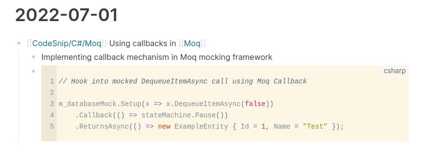
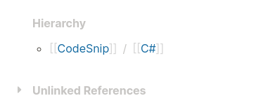
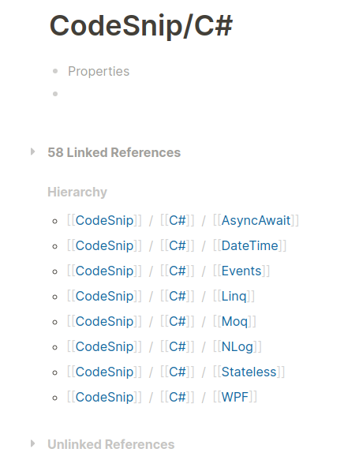
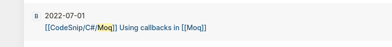
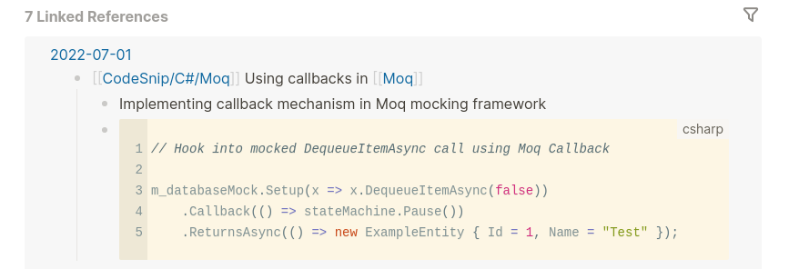

Managing Code Snippets Using Logseq
Loqseq is an excellent note taking application / outliner that facilitates low friction note taking without breaking flow while retaining control over data by using local storage.
Having been wanting to find a good code snippets workflow in Logseq, I've now settled on a system that works really well for me. This is a subject that I found little information on when starting out with Logseq but have now been using this workflow successfully for several months. I find this technique results in easy to read notes, allows for snippets capture in isolation or with surrounding context, and makes rediscovery easy via several search paths.
How to Structure a Code Snippet
A code snippet can be created anywhere. In the journals pages or somewhere in a named page.
The snippet is captured in the form:
- [[CodeSnip/TagA/TagB]] Explanatory title for snippet
- More information
- ```language
// Some code
var a = 'Some string';
```
The information on the top level line is:
CodeSnip- Marks the block as being a code snippet. This could be anything, I chose this because it's easy to type and doesn't collide with any other term.TagA/TagB- Can be one or more tags that form a 'breadcrumb' of related subjects for the snippet. Logseq will see each subject as a separate tag that can be used for grouping and navigation as shown below.Explanatory title for snippet- Tells you what the snippet is about. _Note: It's important that this is on the same line as theCodeSniptag as it makes it more likely that this title will be visible when searching or viewing linked references _
Below that is any other relevant information and the snippet. Here's an example from my graph with notes on a feature in Moq, a C# unit testing / mocking library.
Here's how it looks as captured on the journal page:

Navigation to and Searching for Code Snippets
Note that at the bottom of this page, Logseq has identified CodeSnip and C# parent tags within the aggregate tag [[CodeSnip/C##/Moq]]. Something to note here is that Logseq treats the C# and Moq tags in this path as different tags with the same names elsewhere in my graph (I think this is the correct behaviour as implemented by the Logseq team, as for some subjects, the tag in the context of the path may have different semantics to the standalone tag - though an option to configure this behaviour might be nice). Because of this, I have also used the [[Moq]] tag in the explanatory title to give me the best chance of rediscovering this snippet.

Clicking on the C# tag from the path hierarchy allows me to see all my C# code snippets. Similarly, clicking on a [[CodeSnip/C#/Moq]] tag allows me to see all my Moq code snippets.

Here's how the snippet shows up in a standard search for 'Moq' using Logseq's find functionality.

Here's how it appears as a linked reference from the Moq page.

Summary
So you can see this structure gives us several paths to rediscovering / finding our code snippet, and allows for it to be displayed clearly in each case.